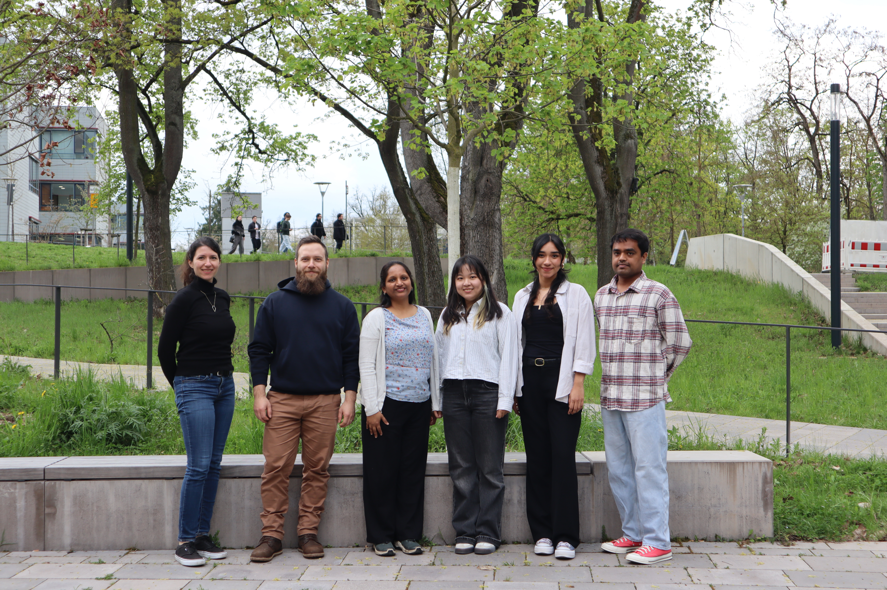

April 2026
Research Group Leader
Email: Pooja.Gupta [at] uk-erlangen.de
Phone: +49 9131 85-42840
Department of Stem Cell Biology, UKER, FAU Erlangen-Nürnberg.
Postdoctoral Researcher
Email: Florin.Ratajczak [at] uk-erlangen.de
Phone: +49 9131 85-42835
Project: S03 “Research Information Infrastructure, Data Management and Bioinformatics Core” in TRR 417 – Cellular Communication in the Stroma of Colorectal Cancer: from pathophysiology to clinical translation (Project No. 540805631)
Postdoctoral Researcher
Email: luis.rivera [at] fau.de
Project: AI-Driven Multimodal Data Integration for Predicting IBD–PD Comorbidity Progression (AI-PREDICT), BMFTR-funded project (Project No. 01ZU2502)
Scientific Staff
Email: alejandra.adali.pizano [at] fau.de
Project: Z01 “Integrative tissue profiling, omics analysis support and FAIR data management” in CASCAID – Cellular and Systems Control of Autoimmune Disease (Project No. 550296805)
Scientific Staff
Email: cornelia.redel-smirnov [at] uk-erlangen.de
Phone: +49 9131 85-42907
Project: Z01 “Management and Administration of the Clinical Research Unit” in KFO 5024 (https://www.kfo5024.med.fau.de/) – Immune checkpoints of gut–brain communication in inflammatory and neurodegenerative diseases (GB.Com; Project No. 505539112)
PhD Student (2025–Present)
Email: Yanlin.Wang [at] uk-erlangen.de
Project: Z02 Project for Bioinformatics analysis and FAIR data management in TRR 369 - DIONE (https://www.trr369-dione.com/)
PhD Student (2026–Present)
Email: Sumit.Kumar [at] uk-erlangen.de
Project: AI-Driven Multimodal Data Integration for Predicting IBD–PD Comorbidity Progression (AI-PREDICT), BMFTR-funded project (Project No. 01ZU2502)